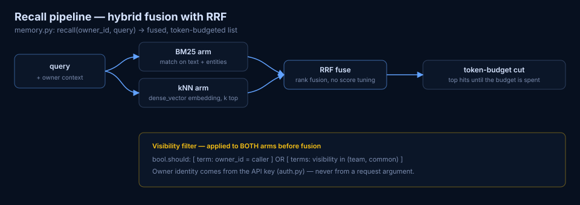

agent-memory-es is a self-owned, Elasticsearch-native long-term memory service for AI agents — three memory tiers, hybrid recall, and strict private/team/common visibility. Run it on your cluster; no memory SaaS between your agents and their past.
Why
Every session starts from zero: re-explained preferences, re-discovered decisions, re-learned mistakes. A memory bank fixes that — with the same discipline you'd expect from any multi-user data store.
episodic raw events in the user's words, semantic distilled facts, procedural playbooks. Each searched together or apart.
Owner identity comes from the API key. The recall filter owner_id == me OR visibility ∈ {team, common} is applied server-side, on both retrieval arms.
private → team/common passes a deterministic sensitive-marker guard. "Forget this" tombstones block re-learning forgotten values.
BM25 over text + entities, dense kNN over embeddings, fused with RRF, cut to a token budget. No embeddings backend? Degrades to BM25-only.
A consolidation worker proposes and applies dedup/supersession across semantic facts. Superseded docs stay as audit history.
Hermes provider plugin, MCP endpoint (Claude Code, Cursor, Codex), or plain curl. Same five operations everywhere.
Visibility model
One store, three visibility levels, one server-side rule. A team playbook and a personal API key never mix by accident.
Default for everything. Recall filter pins owner_id to the API key's owner — never a request argument.
Explicit promotion only, through the deterministic guard. Sensitive-marker text stays private, same text ⇒ same decision.
Fleet-wide playbooks and procedural knowledge. Rejection tombstones keep forgotten values from sneaking back.
Architecture
FastAPI in front of Elasticsearch, a consolidation worker behind it. Every box below is clickable in the interactive version — with links to the exact source lines.
Recall pipeline
Applied to both arms before anything scores.
Match over text + extracted entities.
Dense-vector top-k similarity.
Rank fusion across arms — no cross-arm score tuning.
Top fused hits until the token budget is spent.

Quick start
# 1. boot the stack (backend :8123 + worker + Elasticsearch) cd backend && export AMES_ADMIN_TOKEN=change-me && docker compose up -d # 2. mint a key — owner identity binds to it curl -s -X POST "localhost:8123/admin/keys?owner_id=alice" -H "X-Admin-Token: $AMES_ADMIN_TOKEN" # 3. remember, then recall curl -s -X POST localhost:8123/memory/retain -H "X-API-Key: $KEY" \ -d '{"kind":"semantic","text":"Deploys go through OmniRoute catchup branches"}' curl -s -X POST localhost:8123/memory/recall -H "X-API-Key: $KEY" \ -d '{"query":"how do deploys work"}'
Hermes Agent user? Install the standalone plugin ↗ and these become native agent tools.